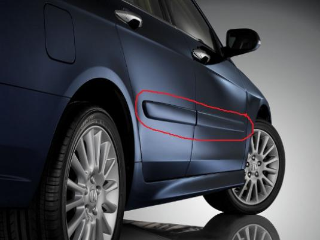

Молдинги

Молдинг представляет собой декоративный элемент, который можно часто встретить даже на самом простом автомобиле. Но его изначальная роль – скрыть некоторые изъяны кузова или защитить определенные участки машины. Эти элементы, не утратив своей первоначальной функциональности, приобрели декоративный вид. Ими стали часто украшать автомобиль, стараясь придать ему стильный вид. Сейчас их приобрести можно практически в каждом магазине запчастей.
1. Виды молдингов
На авторынке молдинги представлены в очень широком ассортименте, но особой популярностью пользуются всего несколько видов.
- Резиновые. Их называют торцевыми и применяют в качестве альтернативы заводским прокладкам, защищая разные стыки от проникновения влаги. Наиболее часто их монтируют между кузовом и дверцей.
- Соединение металла и резины. Такой элемент обладает гибкостью, прочностью и длительным сроком службы. Может быть как декоративной, так и защитной деталью.
- Тандем резины и пластика. Бюджетный вариант, не отличающийся ни высокой плотностью, ни длительным сроком эксплуатации. Такие молдинги используют для защиты некоторых деталей, чаще всего автомобильных стекол и кромки дверей.
- Виниловые. Надежно защищают от любых механических воздействий, несмотря на то, что сам по себе винил – довольно хрупкий материал. Основные участки монтажа – бампер.
- Алюминиевые. Основное предназначение – защита, но последнее время все чаще применяется в качестве модного декоративного элемента для придания автомобилю спортивных ноток.
- Пленочный тип. Его применяют, когда необходимо защитить поверхность от воздействия воды. Не пользуется спросом у автолюбителей, поскольку есть более подходящий альтернативный вариант – резиновые молдинги.
2. Разновидности молдингов
Молдиниги производятся двух видов.
- Декоративные. Представляют огромное поле деятельности для фантазии дизайнера. Бывают самых разнообразных тонов, форм, а также размеров. Но помимо всего прочего, обладают целым рядом полезных функций. Например, светоотражающие молдинги устанавливаются на боковые поверхности и сзади, или же светодиодные, которые смотрятся очень эффектно и оригинально.
- Защитно-косметические. Название говорит само за себя. Эти элементы не только придают стиль автомобилю, но и выполняют свои прямые обязанности, защищая его и скрывая дефекты. Благодаря им можно любой изъян превратить в достоинство.
Каким молдингом воспользоваться – решать владельцу автомобиля. Но перед монтажом стоит все тщательно взвесить, чтобы не разукрасить машину сверх меры.
Источник: vsepoedem.com